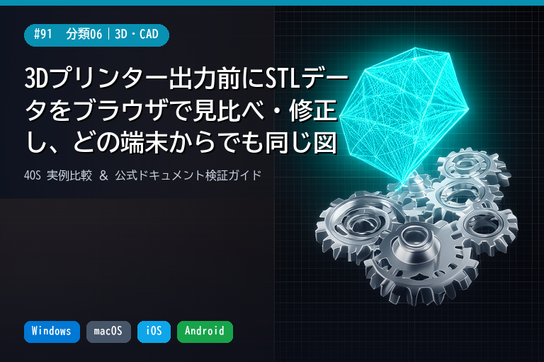

#91｜分類06: 3D・CAD・ものづくり 2026-11-28

STL ファイルをブラウザで共有・閲覧する！Windows/macOS/iOS/Android の 4 OS で「ものづくり」連携術
3DプリンターやCADを使った「ものづくり」において、設計したSTLデータをいかにスムーズに確認・共有できるかは、制作効率を左右する重要なポイントです。
「PCで作成したモデルが、スマホで見ても意図通りの形状になっているか？」「クライアントやチームメンバーに、高価な専用ソフトを持たせずにどうやってプレビューを見せるか？」といった悩みは、多くのクリエイターが直面する課題です。
この記事では、Windows、macOS、iOS、Androidの4つのOSを横断し、「STLファイルをブラウザ経由で共有・閲覧する」ための実践的な連携術を徹底解説します。標準機能の限界を知りつつ、クラウドとWebGL技術を駆使して、デバイスの壁を超えたスムーズなワークフローを構築しましょう。
4OS比較早見表
| 機能・項目 | Windows 11 | macOS | iOS (iPhone/iPad) | Android |
|---|---|---|---|---|
| 主な閲覧手段 | 3D Viewer / ブラウザ拡張 | Quick Look / Safari | Safari (WebGL) | Scene Viewer / Chrome |
| 標準編集機能 | 限定的（メッシュ修正不可） | なし（プレビューのみ） | なし（閲覧・ARのみ） | なし（閲覧のみ） |
| クラウド連携 | OneDrive / SharePoint | iCloud Drive | iCloud Drive / Google Drive | Google Drive / Dropbox |
| AR表示対応 | アプリ依存 | USDZ推奨 | AR Quick Look (USDZ) | Scene Viewer |
1. Windows 11 での実例手順
Windowsは、最も高機能な編集環境を提供しつつ、ブラウザを通じた共有の起点となるOSです。
実例手順
- STL の表示・確認
- ブラウザ拡張機能「3D Viewer for Chrome/Edge」をインストールします（Microsoft Storeまたは公式サイトから入手可能）。
file://プロトコルを利用し、ローカルのSTLファイルをブラウザ内でWebGLビューワとして開きます。これにより、専用ソフトを立ち上げずに素早い回転・ズーム確認が可能になります。- クラウド共有リンクの作成
- OneDriveまたはSharePointにSTLファイルをアップロードします。
- 「共有」ボタンをクリックし、「特定のユーザー以外と共有可能にする」を選択して生成されたURLをコピーします。このURLをiOSやAndroidユーザーに送ることで、相手はブラウザ上でモデルを確認できます。
標準機能の制限事項・注意点
- 編集不可: Windows標準の「3D Viewer」アプリは、STLファイルをメッシュデータとして再構築・修正する機能を持っていません。形状変更にはFusion 360やSolidWorksなどのCADソフトが必要です。
- GPU 依存: ブラウザ上でのスムーズな回転や照明効果は、PCに搭載されているグラフィックボードの性能に左右されます。
よくあるトラブルと解決チェックリスト
- 「ファイルが開けない/白画面になる」エラー
- 原因: セキュリティポリシーによりローカルファイルの読み込みがブロックされたか、拡張機能が非推奨になったため。
- 解決策: Microsoft Storeから最新の「Microsoft 3D Viewer」をインストールし、設定を確認するか、Webベースの無料ビューワサイト（Sketchfab等）へアップロードして確認してください。
- 「共有リンクを開くとファイルが見つからない」というエラー
- 原因: OneDriveの「外部ユーザーへのアクセス制限」が有効になっているため。
- 解決策: ファイルのプロパティ→共有タブで、「特定のユーザー以外と共有可能にする」をオンにしてから再度リンクを取得してください。
- 「STL が破損している」という警告が出る
- 原因: CADソフトでの保存時にメッシュが正常に書き込まれていない場合。
- 解決策: 「MeshLab」（無料ツール）でファイルを読み込み、「修復」機能を実行したのち、再度STLとして出力してください。
2. macOS での実例手順
macOSは「Quick Look」による直感的なプレビューと、Appleエコシステム内でのシームレスな連携が強みです。
実例手順
- STL の表示・確認
- FinderでSTLファイルをダブルクリックします。Mac OS X v10.9以降標準搭載の「Quick Look」が起動し、プレビューア内で回転・ズームが可能になります。
- より詳細な操作が必要な場合は、「Sketchfab Viewer」（App Store）やSafariの拡張機能を使用します。
- クラウド共有リンクの作成
- iCloud Driveにアップロードし、Finderの「共有」メニューからURLをコピーします。MacとiPhone間であればAirDropでの即時転送も非常にスムーズです。
標準機能の制限事項・注意点
- 編集不可: Quick Lookはあくまでプレビュー用であり、メッシュデータの修正は不可能です。「MacでSTLファイルを直接編集する」公式アプリは存在せず、ブラウザ経由のWeb版ツール（SketchUp Free for Webなど）を利用する必要があります。
- ファイル形式依存: AppleのAR機能は主にUSDZ向けです。STLをそのままAR表示するにはサードパーティ製変換やプレビューアが必要です。
よくあるトラブルと解決チェックリスト
- 「Quick Look で画像が崩れている/黒い画面」
- 原因: Quick Lookエンジンが、非常に複雑なメッシュ構造を持つSTLファイルを処理しきれない場合。
- 解決策: Finderのプレビューではなく、SafariブラウザでWebベースの3Dビューワ（Sketchfab等）にアップロードして確認してください。
- 「共有リンクが Mac から iPhone に同期されない」
- 原因: iCloud Driveの設定ミスまたはネットワーク接続断絶。
- 解決策: 「システム環境設定」→「iCloud」でファイルとクラウドのオンを確認し、再度保存して同期を待ってください。
- 「STL ファイルが Finder で開かない」
- 原因: 関連付けられたアプリがないか、Quick Lookプラグインの欠落。
- 解決策: 「システム環境設定」→「拡張機能」でQuick Lookを有効化し、プレビュー用プラグインをインストールしてください。
3. iOS（iPhone / iPad）での実例手順
モバイル端末では、外出先での確認やクライアントへのプレゼンに活用します。
実例手順
- STL の表示・確認
- Safariで共有されたクラウドリンクを開きます。WebGLビューワが動作し、指での操作で回転・ズームが可能になります。
- AR機能活用：Safariから「AR クイックルック」を起動（※主にUSDZ向けですが、Webブラウザ経由のWebGL表示がSTL確認のメインとなります）。
- クラウド共有リンクの作成
- iCloud DriveやGoogle Driveアプリから「共有」→「コピーしてメッセージで送信」を選択します。
標準機能の制限事項・注意点
- 編集不可: iOSの標準機能は、STLファイルの閲覧およびARでの空間配置に限定されます。メッシュデータの修正やスライシング設定は不可能です。
- ブラウザ依存: SafariのWebGLサポート状況により、3D表示が失敗する可能性があります。
よくあるトラブルと解決チェックリスト
- 「AR クイックルックで STL ファイルが表示されない」
- 原因: AR Quick LookはUSDZフォーマット専用であり、STLを直接読み込めないため。
- 解決策: Webブラウザ（Safari等）から共有リンクを開き、「WebGLビューワ」モードで確認してください。
- 「ブラウザ上で 3D モデルが回転しない」
- 原因: SafariのWebGLアクセラレーションが無効になっている場合があるため。
- 解決策: 「設定」→「Safari」→「詳細情報表示」でバージョンを確認し、必要に応じてアプリを再インストールしてください。
- 「共有リンクが iPhone で開けない」
- 原因: クラウドストレージアプリの権限不足。
- 解決策: iCloud DriveやGoogle Driveアプリを開き、「ファイルを表示」から直接URLをコピーし、Safariに貼り付けてください。
4. Android での実例手順
Android端末では、Googleのツールを活用した柔軟な閲覧環境を構築します。
実例手順
- STL の表示・確認
- Google Playストアから「Google Scene Viewer」をインストールし、アプリ内でSTLファイルを読み込みます。またはChromeブラウザで共有リンクを開きます。
- クラウド共有リンクの作成
- Google DriveやDropboxからファイルをアップロードし、「共有」ボタンでURLをコピーします。
標準機能の制限事項・注意点
- 機種依存: 「Google Scene Viewer」はPixelデバイスや特定のAndroidバージョンでのみ最適化されており、メーカー（Galaxy等）によっては動作しない場合があります。
- 編集不可: Androidの標準機能および公式アプリも「閲覧のみ」です。メッシュ修正にはCADソフトのモバイル版またはWeb版が必要です。
よくあるトラブルと解決チェックリスト
- 「Google Scene Viewer がインストールできない/エラー」
- 原因: 機種非対応のため。Galaxyなどでは「Samsung AR」アプリが必要な場合があります。
- 解決策: Play Storeで代替のサードパーティ製ビューワをインストールするか、Webブラウザでの共有リンク表示に切り替えてください。
- 「STL ファイルが読み込まれない」
- 原因: 容量制限やファイルサイズが大きすぎるため。
- 解決策: Cloud Storageにアップロードし、「ダウンロード」ではなく「プレビュー」機能を使うか、Webブラウザ経由で表示してください。
- 「AR モデルが空間に配置されない」
- 原因: カメラの位置情報やGPSがオンになっていないため。
- 解決策: 「設定」→「場所とセキュリティ」で位置情報を有効にし、再度試行してください。
まとめ：快適なマルチOS環境を作るポイント
4つのOSを跨いでSTLデータを共有・確認する際の鍵は、「ファイル形式の統一」と「クラウドストレージの活用」です。STLファイルは汎用性が高いですが、複雑なメッシュデータはブラウザでの表示に負荷がかかるため、可能な限り軽量なモデルでプレビューを行うのがコツです。
また、より高度なものづくり体験を実現するためには、以下の周辺機器や環境を整えることも検討の価値があります：
- 3Dマウス・左手デバイス: Windows/macOSでのCAD操作において、複雑な回転や移動を直感的に行えるため、制作スピードが劇的に向上します。
- 高スペックPC・GPU: ブラウザ上でのWebGL描画も、安定したフレームレートを得るには十分なVRAMとGPU性能が重要です。
- 3Dプリンター: 最終的なアウトプットを確認する際は、ブラウザ上のプレビューだけでなく、スライサーソフトでの「サポート構造」の確認を忘れずに行いましょう。
デバイスの壁を取り払い、どこからでも図面を確認できる環境を整えることで、あなたのものづくりはより自由でクリエイティブなものへと進化します。
参考文献・公式ドキュメント（一次情報ソース）
本記事の手順・仕様は以下の各OSおよびツールの公式ドキュメントに基づいています。OSアップデートによりメニュー名称や挙動が変わる場合があるため、最新仕様の確認にもご活用ください。